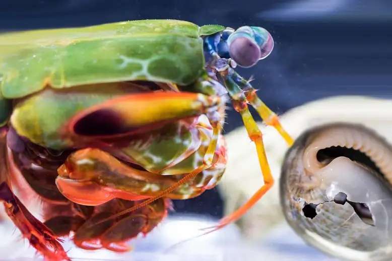

Fatos sobre o Stomatopoda
São animais com hábitos bentônicos, corpo alongado, achatado,
alargando posteriormente. A carapaça é pequena e compreende a
cabeça e parte do tórax, ocupando apenas um terço da longitude do
corpo. Têm olhos grandes e móveis. A primeira antena é longa e
tem três pequenas ramificações no final. Os primeiros cinco pares
dos membros toráxicos são modificados para apreensão. O
segundo par é essencialmente largo, com espinhos no final usados
para capturar e segurar presas. Possui três pares de patas
ambulatórias.
O nome científico do Stomatopoda é Odontodactylus scyllarus
| Reino |
Filo |
Subfilo |
Classe |
Subclasse |
Ordem |
| Animalia |
Arthropoda |
Crustacea |
Malacostraca |
Hoplocarida |
Stomatopoda |
Visão apurada

Esses animais possuem o mais complexo sistema de
visão de cores do mundo animal, pois enxergam 12
cores primárias, correspondentes aos 12 pigmentos
distintos presentes em sua retina.
Pugilista raiz

Apelidadas de lagostas-boxeadoras, costumam ser encontradas próximo
à costa de mares tropicais e subtropicais e são predadoras
letais que se alimentam de caranguejos, camarões,
moluscos e peixes. Na verdade, apesar de não serem muito
grandes — entre 15 e 30 centímetros —, as tamarutacas
são um verdadeiro pesadelo dos oceanos, sendo consideradas
como um dos animais mais violentos do planeta.
Elas possuem duas patas superpoderosas na parte dianteira que,
quando acionadas, são capazes de proferir um golpe com a
mesma aceleração de um disparo de uma arma do calibre 22 e força
de impacto de 60 kg/cm3! E isso em menos de 1/3.000 de segundo,
o que significa que, se um humano pudesse acelerar os braços
com 1/10 desse poder, seria possível lançar uma bola de
baseball em órbita ao redor da Terra.
Verdadeiros superpoderes

Essas patinhas se movem tão depressa que a água próxima
a elas chega a ferver — em um fenômeno chamado supercavitação
—, além de provocar uma onda de choque capaz de matar a
presa mesmo que a lagosta maldita erre o golpe. Assim,
com esse movimento ninja, as tamarutacas assassinam outros
animais, despedaçando os coitados, mesmo que contem
com carapaças protetoras